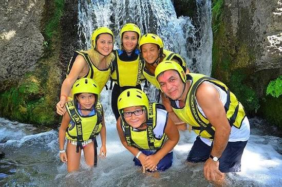
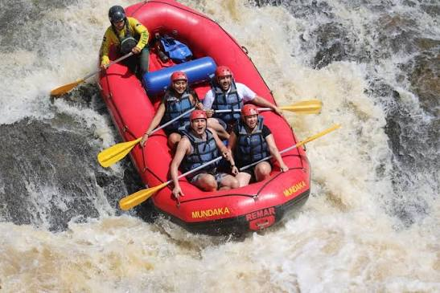
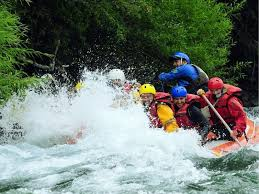

Rafting Familiar
Uma aventura tranquila e segura para toda a família. Ideal para iniciantes, crianças e grupos que desejam conhecer o rafting pela primeira vez.
Escolha a aventura perfeita e viva momentos inesquecíveis nas melhores corredeiras da região.
Entre em Contato
Uma aventura tranquila e segura para toda a família. Ideal para iniciantes, crianças e grupos que desejam conhecer o rafting pela primeira vez.

Um percurso cheio de emoção com corredeiras de nível intermediário. Perfeito para quem procura adrenalina e diversão na medida certa.

Nossa experiência mais radical. Indicado para aventureiros experientes que desejam enfrentar as corredeiras mais desafiadoras da região.
| Passeio | Duração | Dificuldade | Idade Mínima | Preço |
|---|---|---|---|---|
| Rafting Familiar | 2 horas | Fácil | 8 anos | R$ 120 |
| Corredeiras Adventure | 4 horas | Médio | 12 anos | R$ 220 |
| Extreme Rapids | 6 horas | Difícil | 16 anos | R$ 350 |